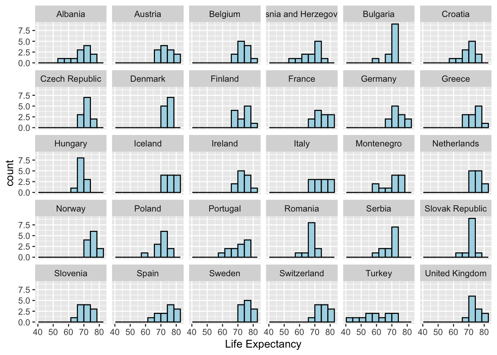
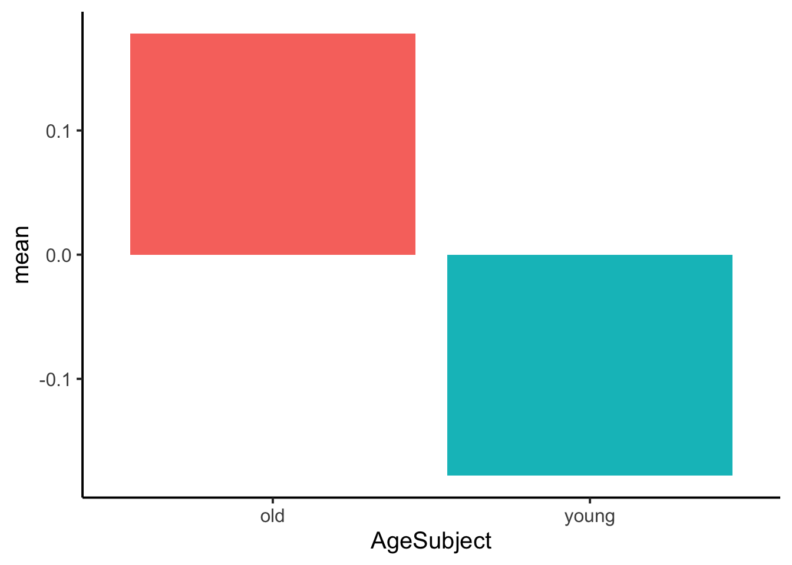

# A tibble: 8 × 3
height weight age
<dbl> <dbl> <dbl>
1 150 45 18
2 160 54 21
3 165 60 25
4 170 68 30
5 175 72 34
6 180 79 40
7 185 85 50
8 190 90 60Problem set 2
due Monday, September 15, 2025 at 11:59am (noon!)
- Instructions
-
Upload your
.ipynbnotebook to gradescope by 11:59am on the due date. Please include your name, Problem set number, and any collaborators you worked with in a text cell at the top of your notebook. Please also number your problems in some way and include comments in your code to indicate what part of a problem you are working on. - Get help!
- If you need support working on your pset, see our week at a glance schedule for office hours and pset support times!
Warning: Avoid redundant loading
You will need the tidyverse library. Recall that Colab comes with this library already installed, and tidyverse includes tibble, readr, and ggplot. Avoid redundant loading.
Problem 1
Create the following tibble with the tribble() function (not tibble()). Use the map() function from the purr package to calculate the median of each column, and store it as col_means. Use the pipe operator (%>% or |>) to pipe that list into as_tibble(), so the output is formatted as tibble. Finally, use rename() to rename the columns of your new tibble to mean_height, mean_weight, and mean_age. Return or print the resulting tibble.
Problem 2
Download this google sheet as a CSV file and upload it into Colab. Then, use the appropriate function from the readr package to import your CSV file into R. Use the na argument to the function to make sure R can recognize the NA values in the RT_ms column. Also include the col_types() argument to the function to ensure the is_frequent column is logical and RT_ms is a double. Use problems() to return the problematic rows in the data. Repair the problems, then use the rename() function to ensure consistent naming in your columns (use _ not spaces).
Problem 3
Sometimes the best way to learn a new package or function is to explore the documentation. The googlesheets4 package allows you to work with Google Sheets directly from R. Read the documentation for this package and figure out how to connect to a sheet, read its contents, and bring the data into R. Use googlesheets4 to import the Europe tab of the gapminder sheet, available here. Return or print the imported sheet to confirm it was read in correctly. You should see the following output.
✔ Reading from "gapminder".✔ Range ''Europe''.# A tibble: 360 × 6
country continent year lifeExp pop gdpPercap
<chr> <chr> <dbl> <dbl> <dbl> <dbl>
1 Albania Europe 1952 55.2 1282697 1601.
2 Albania Europe 1957 59.3 1476505 1942.
3 Albania Europe 1962 64.8 1728137 2313.
4 Albania Europe 1967 66.2 1984060 2760.
5 Albania Europe 1972 67.7 2263554 3313.
6 Albania Europe 1977 68.9 2509048 3533.
7 Albania Europe 1982 70.4 2780097 3631.
8 Albania Europe 1987 72 3075321 3739.
9 Albania Europe 1992 71.6 3326498 2497.
10 Albania Europe 1997 73.0 3428038 3193.
# ℹ 350 more rowsProblem 4
With ggplot2 and the europe data you imported in problem 3, recreate (as faithfully as possible), the following histogram of life expectancy for countries in Europe. Make sure the bars of the histogram are light blue, the border around the bars are black, and you edit the x-axis label to match. Also make sure you have approximately the same number of bins in your histogram.

- Using the
englishdataset in thelanguageRlibrary, recreate the following table. Convert the dataset to a tibble withas_tibble(), then chain togetherdplyrverbs with the%>%operator to create the columns in the order shown. Explore the%in%operator and use it with filter in order to filter to the specific words shown. Sort them in alphabetical order, as shown. Use mutate to create two new columns not in the original data:RTnaming_mean(mean of the RTnaming vector) andRTnaming_diffmean(subtractRTnaming_meanfromRTnaming)
| Word | WordCategory | AgeSubject | LengthInLetters | RTnaming | RTnaming_mean | RTnaming_meandiff |
|---|---|---|---|---|---|---|
| breeze | N | young | 6 | 6.119858 | 6.320535 | -0.2006769 |
| breeze | N | old | 6 | 6.472964 | 6.320535 | 0.1524297 |
| moose | N | young | 5 | 6.123370 | 6.320535 | -0.1971650 |
| moose | N | old | 5 | 6.542760 | 6.320535 | 0.2222255 |
| owl | N | young | 3 | 6.153158 | 6.320535 | -0.1673765 |
| owl | N | old | 3 | 6.459905 | 6.320535 | 0.1393698 |
| pup | N | young | 3 | 6.135998 | 6.320535 | -0.1845369 |
| pup | N | old | 3 | 6.485551 | 6.320535 | 0.1650162 |
| queen | N | young | 5 | 6.181051 | 6.320535 | -0.1394833 |
| queen | N | old | 5 | 6.530732 | 6.320535 | 0.2101972 |
- Take the resulting tibble from question 5, group the data by
AgeSubjectwithgroup_by()andsummarise()by computing the mean and standard deviation ofRTnaming_meandiff. Return the summarized tibble or print it (as shown). Then use the summarized data to recreate the figure. Figure out how to remove the legend entirely!
| AgeSubject | mean | sd |
|---|---|---|
| old | 0.1778477 | 0.0364251 |
| young | -0.1778477 | 0.0251025 |
